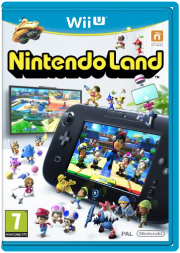
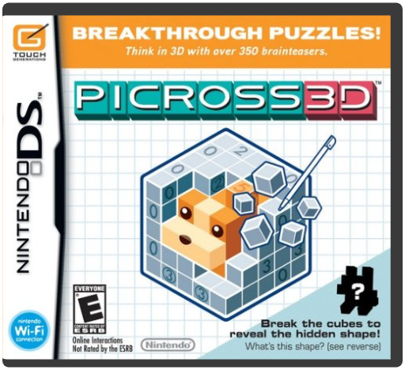
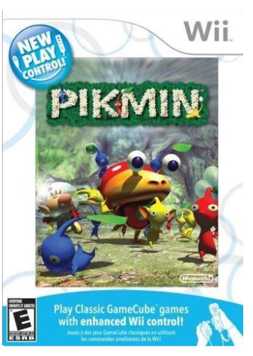
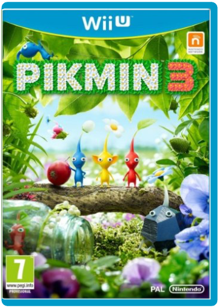
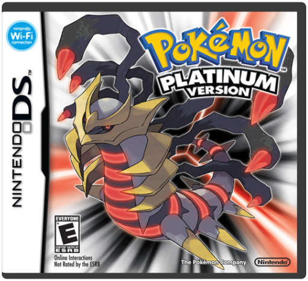

Nintendo LandNintendo Please note WiiU titles are not compatible with the standard Nintendo Wii
Wii U is getting its own Wii Sports-style title in the form of NintendoLand.
Reggie Fils-Aime announced the title during the platform holder's E3 press conference, claiming that NintendoLand will have the same effect as the Wii's launch title - it will make the new controller easier to understand for newcomers.
The game is set in a Nintendo theme park, where players control their Miis and engage in mini-games based on one of 12 rides.
Confirmed rides included Legend of Zelda: Battle QuestAnimal Crossing: Sweet DaysLuigi's Ghost MansionDonkey Kong Crash CourseTakamaru's Ninja Castle
Luigi's Ghost Mansion, for example, is a Pac-Man style maze in which the GamePad user can control the ghosts while players using Wii Remotes control their Miis.
The rides will all feature multiplayer support and some will be compatible with the Wii Remote and Nunchuk.
The project is being overseen by Katsuya Eguchi, who has worked on Animal Crossing, Wii Music and Wii Sports Resort. Picross 3DNintendo Prepare your mind for a puzzling mental work-out, as Picross 3D comes to the DS. Whether the puzzle solver within you prefers logic tasks or quick thinking conundrums, there will be something in Picross 3D for you.
Fancy being your own puzzle master? Bursting with fiendishly difficult puzzle ideas? Dedicated Picross fans will be pleased to know that, similar to its 2D predecessor, Picross 3D offers a level editor for users to create new puzzles and share them with your friends and family via local wireless connection.
Moreover, if you fancy putting your puzzle to the test, you can enter your logic teaser into an international competition via Nintendo Wi-Fi Connection! Using Nintendo Wi-Fi Connection you can download additional content, including both new official puzzles and other people's home-made gems!
Test your logic with over 350 puzzleIncludes a level editor to create your own Picross puzzlesUse the Nintendo Wi-Fi Connection to share your puzzles with the world as well as download additional content PikminNintendo Aw, those Pikmin - they're so cute. And so helpful! Whatever you need done, be it swimming across treacherous waters, building heavy wooden bridges, or carrying life-threatening bombs, those little Pikmin just love helping you out. In Pikmin for Wii, you take on the role of Captain Olimar who has crash-landed on a mysterious planet, watched his spaceship explode into the ether and now needs to find some Pikmin pals pronto in order to get back into orbit.
Nintendo has remade this GameCube real-time strategy classic for Wii as part of the New Play Control! series. Now every Wii owner has the opportunity to take on the surreal world of Pikmin and track down the pieces of Olimar's spaceship by overcoming the obstacles, puzzles and foes that lie in wait. There are three types of Pikmin you can guide through the lush landscape: the fiery, aggressive Red Pikmin, the amphibious Blue Pikmin and the bomb-specialist Yellow Pikmin. They don't just appear out of thin air to obey your every whim though. They live in special little Onion capsules and start off life as an Onion seed, which you must nurture through three stages of development. And make sure you get them all home safely by dark - hostile enemies lie around every corner, so it really pays to know your Onions.
The all-new Wii version of Pikmin adds several features to the game, including the ability to replay any day, and an enhanced control system, using the Wii Remote and Nunchuk. You only have 30 in-game days to complete your mission and get the Dolphin spaceship up and running. Can you manage it? You'll need your wits about you as you rediscover the magic of Pikmin in New Play Control! Pikmin on Wii. Part of the exciting New Play Control! series on WiiCollect up to 29 spaceship parts so that Captain Olimar can continue his journeyMultiple endings to enjoy, dependent on level of successUse Wii Remo Pikmin 3Nintendo Please note WiiU titles are not compatible with the standard Nintendo Wii
The Return of an Army
Pikmin 3 is a fully reimagined, mass-action strategy title from the critically acclaimed Pikmin series. Players will discover a beautiful world filled with strange creatures and take command of a swarm of ant-like Pikmin trying to survive. The world is densely packed with treasures and enemies, which makes the game much more action focused and fills it with layers of potential strategies and paths, adding greater replayability to challenge modes.
Players can play using Wii Remote Plus and Nunchuk-based controls or the Wii U GamePad controller. With new intuitive controls that make it possible to aim at objects directly, players can command their tiny, yet powerful, squads in different ways.The GamePad acts as an overhead map and radar to track Pikmin movements in real time. Players can slide a finger across the touch screen to quickly switch between areas, giving greater flexibility in commanding multiple groups of Pikmin.The greater processing and HD capabilities of the Wii U console are put to extensive use, resulting in a more intricately designed world, enhanced ant-like movement of the Pikmin and precisely detailed overhead views for enabling easier strategic use of the Pikmin.After completing a stage, the replay feature allows players the option to review their results using the GamePad and TV. Fast-forward, rewind or pause while assessing the previous mission to decide on other paths.In addition to the five original types of Pikmin encountered in previous games, the new Rock Pikmin bring powerful new abilities and are able to crack hard outer shells of enemies and break through solid barriers.Mission Mode challenges players to earn the most treasure in a given time. Pokemon PlatinumNintendo As the story unfolds, players will encounter the mysterious new Distortion World, an area unlike any seen in a Pokemon video game before. The Battle Frontier area (first introduced in Pokemon Emerald) has been added to Sinnoh, containing five new Battle Facilities for Trainers to challenge, each with its own special rules. Players can explore the new Wi-Fi Plaza a virtual Pokemon amusement park filled with activities, including three new mini-games where up to 4 players can compete at once. Distortion World: As the story unfolds, players will encounter the mysterious new Distortion World, an area unlike any seen in a Pokemon video game before. The normal rules of time and space don't apply to this world, allowing the area to push the limits of the Pokemon game world. Players leap from pieces of land suspended in midair, walk sideways and even upside-down. The Distortion World, where the powerful Giratina resides, is somehow connected to the regular Pokemon world.The Battle Frontier: The Battle Frontier area (first introduced in Pokemon Emerald) has been added to Sinnoh, containing five new Battle Facilities for Trainers to challenge, each with its own special rules. Each facility is run by one of five new Frontier Brains (characters that are similar to Gym Leaders). The new battle formats in each facility allow players to challenge themselves in new ways.Wi-Fi Plaza: Players can explore the new Wi-Fi Plaza a virtual Pokemon amusement park filled with activities, including three new mini-games where up to 4 players can compete at once. Up to 20 players from around the world can connect together in the Wi-Fi Plaza to experience games, take part in parades and even see a fireworks show.Enhanced Storyline: New characters add to the story, including Charon, a new Commander of the villainous Team Galactic (who is suspicious even by their standards) and an undercover detective, codenamed Looker, |


 Made with Delicious Library
Made with Delicious Library